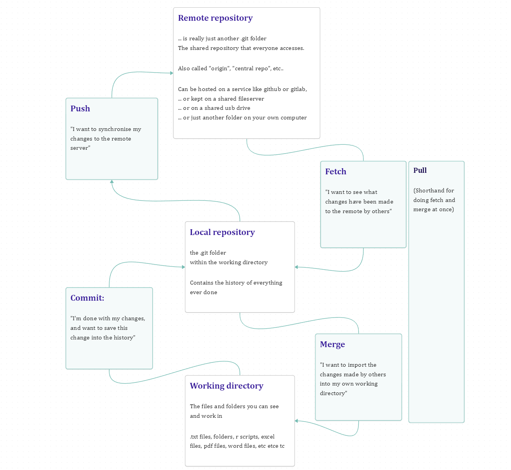
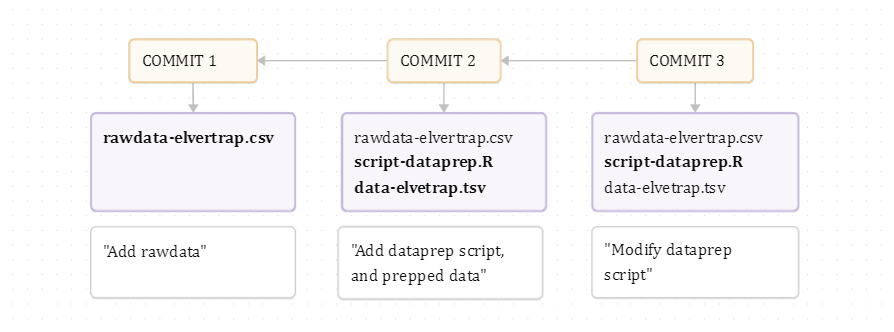
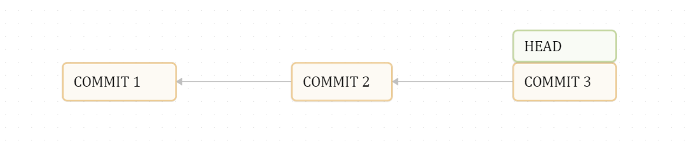
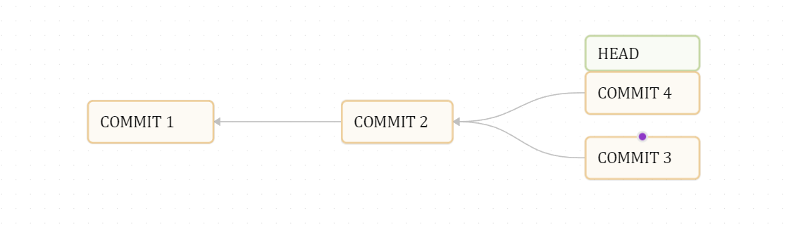
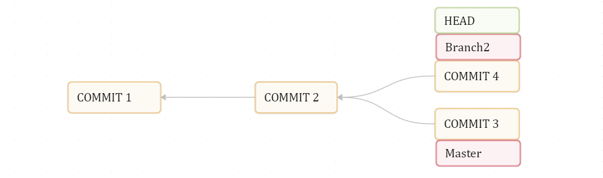
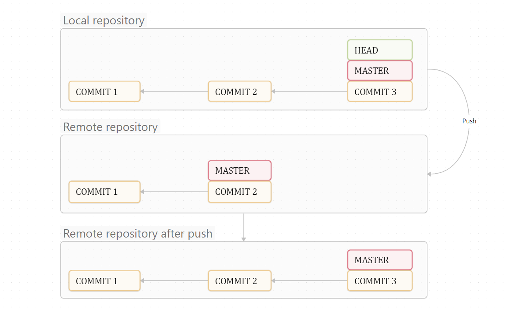
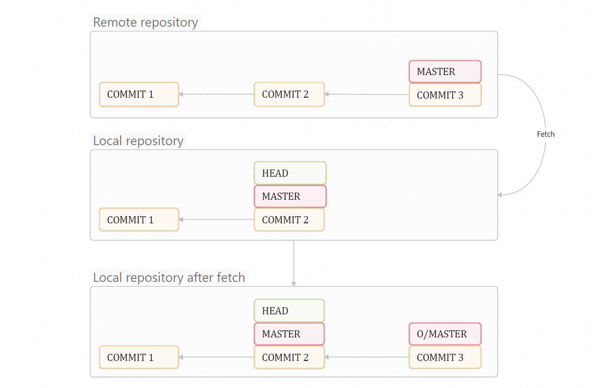
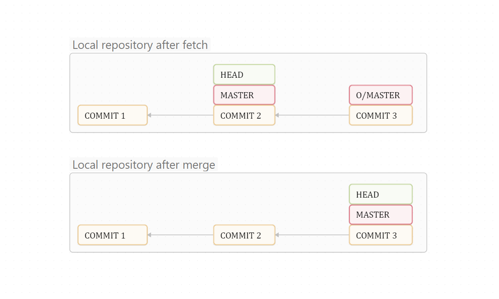
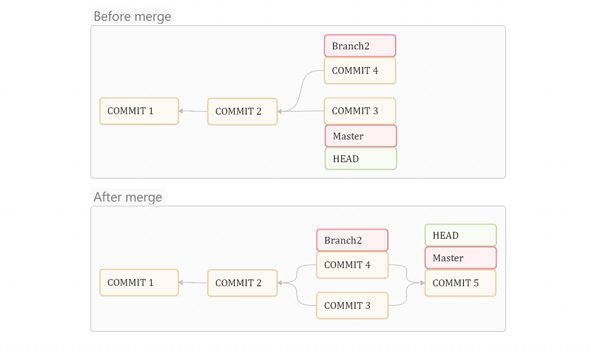

Git guide
Git introduction
A brief guide to git at a conceptual level. For a more detailed introduction, see the Pro Git book
This intro is designed to give you the conceptual overview as briefly as possible. Feel free to edit if you can 1) Correct mistakes, 2) Reduce redundant text, or 3) Add in glaringly obvious omissions.
Brief introduction
Git (wiki) is a system for version control and collaboration on work with computer files. It lets you create a specialized history of file edits, which you can either use alone, or in collaboration with others who work on the same files. Git can be used by a single user on a single computer, or it can be used by a team spread out over multiple computers. In the latter case, a shared network hard-drive, or a server with git-hosting software is needed (e.g. github.com or gitlab.com).
The git software is necessary to create- and interact with git repositories, see: git-scm.com
Git is mainly designed to be used via the command-line, and only via the command-line do you get access to all its features. If you are unfamiliar with working via the command-line, git is actually not a bad place to start, as it only requires relatively simple commands. All you really to understand is how to navigate folders, and maybe the basic structure of a command. However, there are some programs which offer you a graphical user interface to git; Github desktop is one example of this. Rstudio includes a basic (but slow and clunky) interface to git. Visual Studio Code (or for R, Positron includes a much more modern take on a graphical interface to git, and is fairly fast and easy to work with.
The git workflow
A git project is really just a folder of files. Any folder on your computer can be turned into a git project, and git can track any kind of files (with some notable caveats, see “File types” below).
Working alone:
When you turn a folder (the working directory) into a git project, all that really changes it that your folder now also includes an (-often hidden) .git subfolder. This .git folder is your repository, and is where you will be storing your project history. After you have made edits to a file, you can commit these changes to your repository, creating a “save point” or “snapshot” of that file in that moment. You describe that commit with a commit message. Over time, these commits and commit messages becomes a linear log of your project progress.
Working with others:
You can share your repository with others. First you need to make a copy of it which will serve as a remote repository, and which you will keep on a shared network drive or some server like github.com or similar.
Now, after you have commited some change to your local repository on your computer, you can push these changes over to the remote repository. Other users can then fetch these changes from the remote repository and down to their local repository. After having fetched a commit down to your repository, you can merge your working directory into that commit to bring the changes to your local working directory. (Note: A “pull” is a shorthand for “fetch and merge”)
In short:
Working directory -> (commit) local repository -> (Push) Remote repository
Working directory (merge) <- local repository <- (fetch) Remote repository

Overview of git concepts
Working directory
The project folder on your computer with the files you are working on Is just a normal folder
Repository
A database where the version history (commits) for your working directory is stored.
(is a folder named .git )
(is lokated within your working directory!)
Commit
A snapshot of your working directory at some time-point
(Each commit has a reference to its previous commit, its parent)
(This way, commits form a chain of development for your project)

Commit ID
Each commit has a unique ID, which is an automatically generated 40-character SHA-1 checksum, like “a11bef06a3f659402fe7563abf99ad00de2209e6”
These IDs are used in various commands to refer to that specific commit. You usually don’t have to spell out the entire ID though, and usually it is enough with just the first few characters, like “s11bef0” as in the ID above
Commit message
A user-written description of what has changed in a commit
Staging area
aka: the index
A list of which files you want to include (“stage”, or “add”) in the next commit
Staging
Adding a changed file to the staging area
Commit history
General term. Refers to the chain of commits making up the version history of your project
Checkout
You can move back and forth in time, by “checking out” an old commit to your working directory If you checkout to an old commit, your working directory will be changed to what it looked like when that commit was made.
HEAD
Refers to where in your commit history your working directory is checked out to Essentially, “where in my history am I working now?”
The HEAD is usually located at the very last commit, but not always.
(Checkout moves the HEAD to another commit)

Branching commit structure
Your chain of commits can branch. This is because a single commit parent can have more than one offspring commit following it.

Branch
In git, a branch does actually not refer to the branching commit structure. Instead, a branch is a label attached to some commit in your commit history. Think of a branch as a little twig hanging of your “tree” of commits. When you start a repository, your first commit will have the branch “master” attached to it When you make a new commit, this commit is made on that branch, and the branch label (the little twig) is moved to the new commit, together with your HEAD
Usually, every “branch” of your commit structure will have such a branch (label/twig) attached to their very tip. They indicate where work is currently ongoing.
When you start a new repository, the default branch is often called “main” or “master”

Local repository
Refers to a repository on your computer, the one which your working directory is being logged to
Remote repository
aka: origin Another repository for the same project, which maintains the same commit history, but is not located on your computer.
Pushing
When you send your commits to the remote repository

Fetch
When you receive commits from the remote repository (that someone else maybe made)

Remote branch
All the branches (labels/twigs) in your local repository will have corresponding branches in the remote repository. These branches may not always be at the same location in the history, often because one repository may have newer commits than the other one.
When you fetch changes from your remote repo, your local branches will stay where they were in the history. The branches from the remote repository will be at the tip of their commit chains, and are usually labeled “origin/master” (as in, the master branch from the origin repo).
To bring your local branches up to the latest commits fetched from the remote (i.e. up to their remote branches), you want to do a merge:
Merge
Sometimes, you may want to merge branches i.e., take two commits and combine them.
This most commonly happen when you fetch changes from the remote repository. When this happens, you will often get new commits what are added onto the commit you were working on yourself (i.e. where your current branch is) The situation then is that your last commit (whit its branch) is located downstream of the latest commits (and the “remote branch” at the tip of them) from the remote repo. The sollution then is to merge your branch forward to the remote branch. This creates a new commit which is the combination of the two commits the branches were pointing to.

Another merge example:

Pull
A shorthand for “fetch and merge”, does both in one operation. I.e., collects the latest commits from the remote repository, and moves your local branches up to the tip of these commit chains up their remote counterparts
Reset
Advanced function which allows you to reset either (-or all of) 1) the location of the HEAD, 2) your staging area, or 3) your working directory to an earlier commit.
See https://git-scm.com/book/en/v2/Git-Tools-Reset-Demystified
Stash
Sometimes you need to “clean out” your working directory so that there are no un-commited changes in (i.e. it is identical to the last commit), but you want to keep your changes for later. To do this, you can “stash” your changes. All of your changes will be saved to the stash, and can be taken out later.
Rebase
https://git-scm.com/book/en/v2/Git-Branching-Rebasing Another advanced function which can rewrite commit history
File types
Git works best with plaintext files. i.e. files where the content is stored only as text. These take up little space, are easy to compress, and easy to track changes in. If you are unsure if a file is plaintext or not, try opening it in a plaintext program like notepad (windows) or textedit (mac).
You can also store and work with binary formats (such as .docx, .xlsx, .jpg, .png, etc…), but these don’t compress well and take up a disproportinally large amount of space, and can make your project slow.
.gitignore
.gitignore is a file in your working directory. This file contains a list of files which git should not track. For example, if your project contains code which produces a lot of .png images, then you might not need (-or want to) track these images, since they are reproducible from the code you have written. Not tracking these files will also keep your overview of changed files less cluttered, and it saves space in your directory.
To ignore all .png files in the direcotyr “plots”, you would add the line plots/*.png to your .gitignore. For more, see: Pro git book - Ignoring files